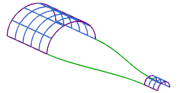

在部件导航器中，右击拉伸 (0)并选择编辑参数。
选择编辑曲线选项。
编辑拉伸 (0)中的椭圆，将长轴半径由50.8更改为38.1，短轴半径由25.4更改为31.8。
提示：编辑→特征→编辑参数，然后选择拉伸 (0)→确定→编辑曲线，选择椭圆→更改值→确定所有的对话框(直到模型更新)。
编辑拉伸 (1)中的圆弧，将半径由12.7更改为9.5。
提示：半径可以在屏幕底部的跟踪条中编辑。
点击确定直到模型更新，观察关联的桥接曲线如何变化以匹配父项几何体。

关闭部件。